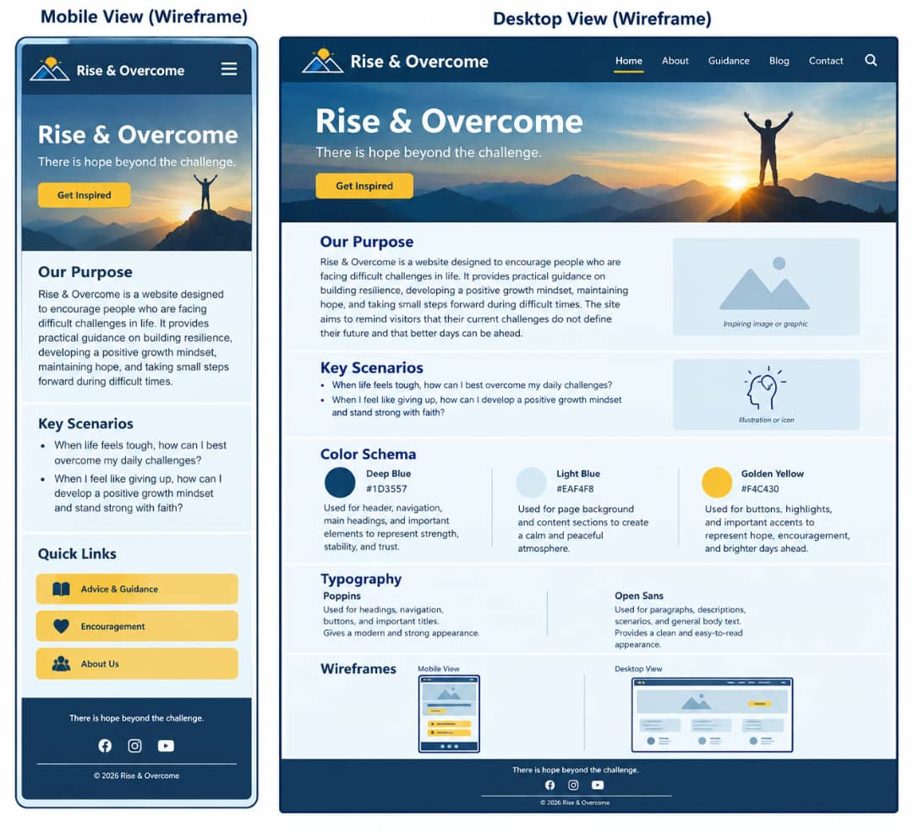

Site Name
Rise & Overcome represents the strength to keep moving forward when life becomes difficult. The name reflects the purpose of this website: to encourage people to rise above challenges, develop resilience, and hold on to hope for better days ahead.
Site Purpose
Rise & Overcome is a website designed to encourage people who are facing difficult challenges in life. It provides practical guidance on building resilience, developing a positive growth mindset, maintaining hope, and taking small steps forward during difficult times. The site aims to remind visitors that their current challenges do not define their future and that better days can be ahead.
Scenarios
- When life feels tough, how can I best overcome my daily challenges?
- When I feel like giving up, how can I develop a positive growth mindset and stand strong with faith?
Color Schema
Deep Blue (#1D3557): This color will be used for the header, navigation, main headings, and other important elements to represent strength, stability, and trust.
Light Blue (#EAF4F8): This color will be used for the page background and content sections to create a calm and peaceful atmosphere.
Golden Yellow (#F4C430): This color will be used for buttons, highlights, and important accents to represent hope, encouragement, and brighter days ahead.
Typography
Poppins: This font will be used for headings, navigation, buttons, and important titles. It gives the website a modern and strong appearance.
Open Sans: This font will be used for paragraphs, descriptions, scenarios, and general body text. It provides a clean and easy-to-read appearance.
Wireframes
Mobile and Desktop Views
